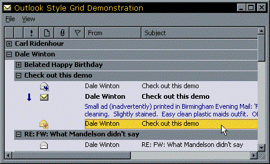

S-Grid Documentation (5K)
S-Grid Documentation (5K)
 VB5 Control Binary (103K)
VB5 Control Binary (103K)
 VB5 Demonstration Project (87K)
VB5 Demonstration Project (87K)
 VB5 Full Source Code (266K)
VB5 Full Source Code (266K)
 VB6 Control Binary (103K)
VB6 Control Binary (103K)
 VB6 Demonstration Project (66K)
VB6 Demonstration Project (66K)
 VB6 Full Source Code (232K)
VB6 Full Source Code (232K)
 Bugs: 6 / 10
Bugs: 6 / 10
 Issues: 4 / 9
Issues: 4 / 9
 Questions: 0 / 0
Questions: 0 / 0
 1 Nov 1999
1 Nov 1999
A new VB6 binary of the control is available, courtesy of Glenn Halbedl. Thanks! Plus a new VB5 compile including 13 minor bug fixes and changes to the control.
 Subclassing Without The Crashes
Subclassing Without The Crashes
 vbAccelerator ImageList Control and Class v2.0
vbAccelerator ImageList Control and Class v2.0

vbAccelerator S-Grid Control
A lightweight all VB Grid: Smooth Displays and Outlook Style Features!
The SGrid control is an all-VB grid which can emulate the Outlook messages list, including grouping of messages and message preview. The highly optimised display code makes this grid draw faster than FlexGrid and other VB grids even while it allows more sophisticated displays to be set up. It is also a good replacement for a ListView in report mode.
What S-Grid Can Do
Row Features
- Add, Insert or Remove rows.
- Rows can be visible or invisible.
- Row height can be set independently for each row, or automatically calculated based on the contents of the cells.
- Rows can be set to be "Group Rows". When this is set, the row extends across all of the cells and displays only the information in the last column of the grid (which doesn't appear in the grid's header).
- Sort rows automatically using the grid's inbuilt Sort object, which allows the grid to be sorted by up to 8 columns simultaneously based on many sorting criteria (icon, selection, indentation, text, date, number).
- SGrid can theoretically accommodate up to 2 billion rows. Practically, performance becomes unacceptable for grids containing more than about 10,000 rows.
Column Features
- Add, Insert or Remove columns
- Columns can be visible or invisible.
- Column headers can be clickable or flat.
- Set column width independently for each column, or have it automatically calculated based on the contents of the cells.
- Column headers can have text and/or icons, and the icon position can be set to the left or right of the text in the header.
- Text in column headers can be aligned Left, Right or Centred.
- Get/set the order of the columns in code. Columns can optionally be set so the user can drag them to change the order.
- SGrid can theoretically accommodate up to 2 billion columns. A practically maximum is somewhere around 1,000 columns.
Cells
- Set Background and Foreground colours on a cell by cell basis.
- Each cell can have its own font.
- Up to two icons per cell, drawn from an image list. CellExtraIcon specifies the first icon to be drawn and CellIcon the second. Icons can optionally be highlighted when selected.
- Cells can be indented so selection and drawing starts at a specified offset.
- Cells can have up to 8,192 characters of text.
- Cell text can be aligned horizontally or vertically left, right or centred; it can appear on a single line or multiple lines; text can appear with a trailing ellipsis (...) or it can be broken on words.
- Cells can be included or excluded from the selection box for a row.
- The last cell in the grid can be set as the "RowTextColumn". Data in this cell is either drawn directly underneath the standard cells (like the message preview in Outlook) or if the Group Row property is set then only this column is drawn. You can either specify the column that this row starts drawing at or allow the grid to work this out automatically (when it starts drawing at the first cell which is included in the selection box).
Other Features
- RowMode
S-Grid works either as a standard grid, where you can individually highlight each cell, or as a row-based grid, where you can highlight whole rows. - Selections
You can have Multiple or Single selections, and this property can be set either at run-time or design-time. - Background Bitmap
S-Grid will tile a standard VB Picture object behind the grid. - Virtual Mode
In Virtual mode, S-Grid will request new rows whenever they need to be displayed. This allows you to add rows as they are required. - Editable Setting
By setting this property, S-Grid will raise a RequestEdit event whenever the user clicks twice on a cell, or hits the return or space keys on a cell. You can use this to show a child control such as text box or combo box over the grid cell (positioning it to the position retrieved using the CellBoundary method). - Show/hide gridlines at run-time or design-time.
... And What S-Grid Doesn't do
- S-Grid has no data-binding features whatsoever. To load records from a database you must write the code yourself!
- Each row must have the same number of columns.
- You cannot group cells together, although you can have one cell in each row which spans multiple columns.
- S-Grid does not have an IDE designer so the grid's layout cannot be set at design time; it must be set up in code.
- You cannot change have different fonts within a cell (although each cell can have its own font
S-Grid Performance
The following performance tests will give you an idea of how S-Grid performs. The speeds are given for adding a number of rows to a 10 column grid, adding the text Row[y]Col[x] to each cell. For comparison the same grid has also been set up in a ListView in report mode and a standard VB5 FlexGrid. All measurements are given in seconds and were performed on Win95 using VB5 on a PII 266MHz with 32Mb memory and an 8Mb AGP ATI XPert@Work graphics card.
Rows | |||||||
| Control | 512 | 1024 | 2048 | 4096 | 8192 | 16384 | 32767 |
| ListView | 0.18 | 0.36 | 0.74 | 1.49 | 2.78 | 6.23 | 11.0 |
| FlexGrid | 1.46 | 3.74 | 11.2 | 35.6 | 121 | Aborted | Aborted |
| S-Grid | 0.31 | 0.64 | 1.24 | 3.50 | 7.31 | 13.6 | 77 |
Coding With S-Grid
The demonstration project shows how to use all S-Grid's features. The demonstration contains five different forms demonstrating different aspects of S-Grid's use and showing some ideas of how you can use S-Grid in your project. Get stuck into this code!
Hints And Tips
The main thing to remember with S-Grid is to ensure you set the Redraw property to False whenever you are changing a large number of cells. This particularly applies when adding or inserting rows and changing the visibility of multiple rows.
To get your grid to work, make sure you set up the columns before attempting to add any rows. Remember that all rows in the grid have to have the same number of columns.
If you want a row to span all columns, make sure the last column in the grid is an invisible column with the bRowTextColumn parameter of the AddColumn method set to True. When you add the row, set the RowIsGroup property for that row to True (or set the bGroupRow parameter of the AddRow method to True).